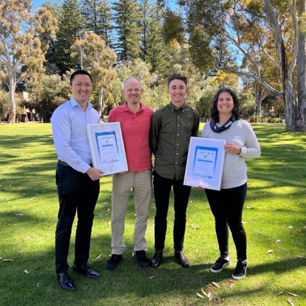

Analytics
I am an experienced Data Analyst with a passion for problem solving. I have always been fascinated by data and how I can use it to tell a story and provide a better understanding of complex problems to help make big decisions. I love the challenge of sifting through vast amounts of information to uncover hidden patterns and insights.
Bikes
I’m also passionate about bike riding. Whether it's for fun, for sport, for a healthier mind, body and planet, or for a deeper connection to surroundings and community, each pedal stroke brings me joy. Knowing the benefits of cycling, I'm a strong advocate for encouraging others to embrace cycling as a regular and rewarding activity.
Coding
I’m always looking for ways to improve my skills and stay on the cutting edge of technology. I'm delighted to have been awarded a scholarship from Pawsey Supercomputing Research Centre to undertake the She Codes Plus program to learn HTML/CSS, Javascript, Python, React, WordPress and Django. This is website serves as my portfolio of projects to showcase my new skills to the world.
Projects
As I work through the She Codes Plus course, I will add projects to my portfolio
Bike Blog
I am an active contributer to the Department of Transport's Your Move program, encouraging people in my community to leave the car at home and walk, ride or catch the bus instead. These are a few of my favourite posts.
Treasure Island on Kuljak in Ascot
Opens in a new tab
Bethesda scoops Workplace awards!
Opens in a new tab
STANC x STACC = Weekly Bike Games
Opens in a new tab
Appreciation for our local council

Opens in a new tab
Walk to School Day 2023
Opens in a new tab
2023 WA MTB School Series Achievements
Opens in a new tab